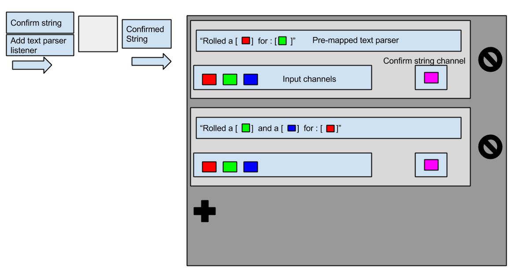

Text Formatter:
This component takes integer data and places it into a sentence structure made by the author of the app. It accepts multiple channels then through the customization bar the author can edit a sentence around those values.
[String Ex: "The number of apples (john) takes is 3" -- (john) and (3) are the received values and were placed in that order by the author.]
Listener Channel:
-
Add parser option: listens to values that can be added to the options list in the text-parser screen.
-
Confirm string: listens for a sentence confirmed signal that will send the finished sentence structure out to the next component.
Output Channels:
-
Confirmed String:sends out confirmed strings pre-made by the author that contain the values gathered by the listener channels.
